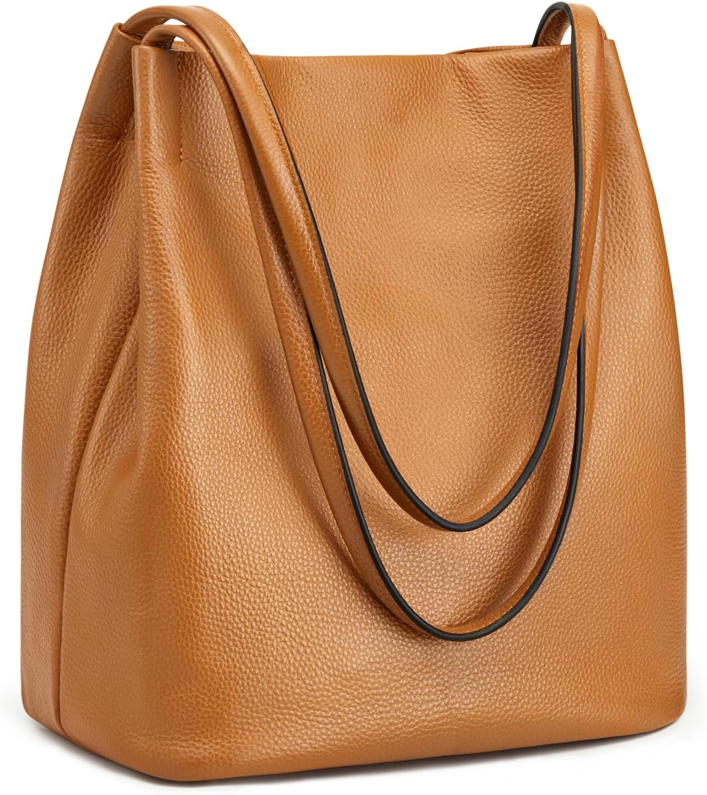

Kattee Bolso de mano suave de piel auténtica: el bolso del día 329
Fin de semana: otras reglas, otros ritmos. El bolso de hoy es el Kattee Bolso de mano suave de piel auténtica. No es un capricho de escaparate: es el que acompaña el bolso que no pide permiso, con 4,3★ de nota media y 1,803 valoraciones que respaldan la decisión.

Un bolso no cambia tu día. Cambia la manera de entrar en él: con lo que necesitas, sin lo que sobra y con la certeza de que otras 1,803 personas ya hicieron la misma elección antes que tú. Lo que más repiten sus compradoras: calidad.